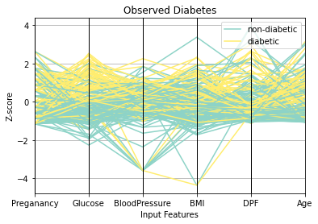

Diabetes Prediction Summary
Contents
Diabetes Prediction Summary¶
Logistic regression was performed for a binary classification problem to predict whether a subject is diabetic or non-diabetic. Input variables provided in the dataset included pregnancies, glucose level, blood pressure, skin thickness, insulin, BMI, diabetes pedigree function, and age. Outcomes were denoted by a 1 for diabetic and a 0 for non-diabetic.
Functions were created in Python to initialize the data, split the dataset into training and testing sets, normalize input values, add a bias, calculate cost, gradients, and model accuracy, iterate through gradient descent, and visualize the data. Initially, the model was trained on all 8 provided features, resulting in the following output:
Final weights: [-0.66405417 0.30734772 0.71401776 -0.11287652 -0.00607035 0.03314956 0.52259872 0.2591092 0.16235891]Final cost: -0.0017505502766420476>
Training Accuracy: 0.7673611111111112
Testing Accuracy: 0.78125
Since all input values were normalized, the final weights in the output reflect the features that have the largest impact on the significance. Conversely, the classes corresponding to the weights very close to 0 are less significant. Thus, skin thickness and insulin levels, with weights -0.0060735 and 0.03314956 were considered least impactful.
Another logistic regression model was trained and tested on the other classes. The resulting accuracy for training and testing sets were quite similar to the initial model:
Final weights: [-0.89146127 0.42844742 0.9595772 -0.22267593 0.75103708 0.31908514 0.10940684]Final cost: -0.050473260107638356
Training Accuracy: 0.7743055555555556
Testing Accuracy: 0.7760416666666666
As indicated by the output results of this model as well as the previous model, glucose is most impactful on diabetes prediction, as its corresponding weight is furthest from 0. This observation is also correlated by the parallel coordinate plot of the test data:
Glucose Comparison¶
Since both previous applications of logistic regression on the diabetes dataset indicated that glucose was the most significant variable, models were created to perform logistic regression on glucose and another variable that also had a greater impact. Disregarding the bias as this is the same for all cases, the features with the most extreme weights after glucose, from most significant to least signficiant, were BMI, pregnancies, and diabetes pedigree function. Performing logistic regression on these variables and glucose yielded very similar test accuracies, specifically of 76.0417%, 77.0834%, and 77.6042%, respectively. This can also be seen in the side-by-side scatterplots below comparing predicted diabetics to observed diabetics for each of the three models.


Decision Boundary¶
The black line in each of the “Predicted Diabetes” scatterplots shows the decision boundary. This was calculated by setting the sigmoid function \(h_{\theta}(x) = 0.5\). Thus, the boundary is determined by when \(\theta_{0} + \theta_{1}\cdot x_{1} + \theta_{2}\cdot x_{2} = 0\).
Solving for \(x_{2}\), the y-axis variable of the scatterplot, gives:
This is a linear relationship between the x-axis variable, \(x_{1}\), and the y-axis variable, \(x_{2}\).
Finally, logistic regression was performed on the dataset, removing glucose from the selected features. Instead, a model was created, trained, and tested on BMI and pregnancy values. The results is a noticeably less accurate classification rate, as observed from the output:
Final weights: [-0.62254392 0.61786381 0.4043365 ]Final cost: -0.028591104587616968
Training Accuracy: 0.6996527777777778
Test Accuracy: 0.671875 ```{image} ./bmi-pregnancies.png :name: label ```